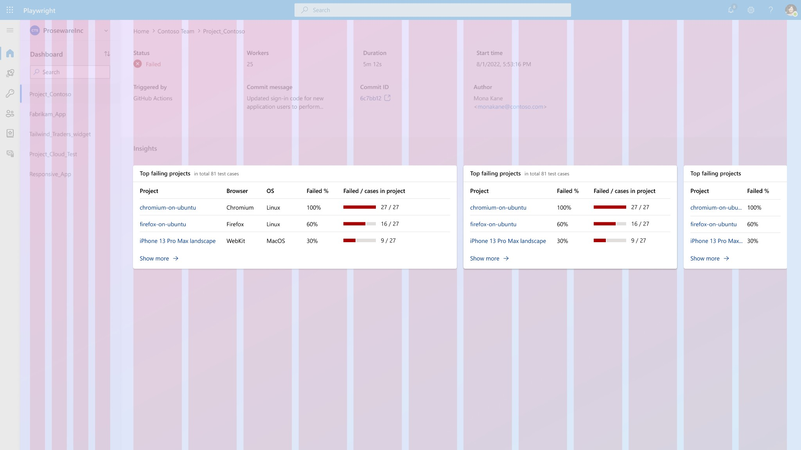
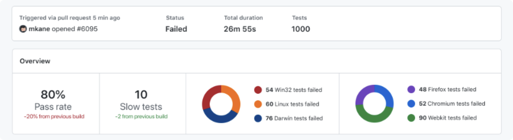

Microsoft
Microsoft Playwright Testing
Taming complex, hierarchical test data into an intelligible cloud-based debugging dashboard for enterprise QA engineering teams.

The real challenge wasn't scale.
It was helping teams stay oriented while navigating deeply layered test data.
My Design Impact
Insight
Designed data visualization patterns for debugging and trend analysis, including a new time-series pattern for representing test status across runs, enabling teams to quickly spot regressions, flaky behavior, and long-term quality trends.
-8.png)
-9.png)
-5.png)
-3.png)
-11.png)
-6.png)
-7.png)
.png)
-1.png)
-4.png)
-2.png)
-10.png)
-4.png)
-5.png)
.png)
-9.png)
-1.png)
-2.png)
-3.png)
-6.png)
-7.png)
-10.png)
-8.png)
-11.png)
Structure
Defined the information architecture for a deeply hierarchical testing system, enabling QA teams to navigate and debug dozens of concurrent test configurations without losing context.
Established a single source of truth by unifying loosely defined and overlapping concepts into a shared model across product, design, and engineering.
- 00a Global metadata
- 00b Global insights
- 00c Workspace list
- 01a Workspace metadata
- 01b Workspace insights
- 01c Dashboard list
- 02a Dashboard metadata
- 02b Dashboard insights
- 02c Test run list
- 03a Test run metadata
- 03b Test run insights
- 03c1 Test suite list
- 03c2 Test group list
- 03c3 Test case list
- 04a Test case metadata
Features
- 00-A Account mgmt
- 00-B Pricing
- 00-C Documentation
- 01-A Get started
- 01-B Access token
- 01-C Manage access
- 04-A Output/Test steps
- 04-B Run history
- 04-C Screenshot
- 04-D Video
- 04-E Trace Viewer
Navigation & Sensemaking
Designed the navigation and sensemaking model around three core questions QA engineers ask when debugging at scale:
- Where am I in the data structure?
- What is this test about?
- Why is it failing?
The layout combines left navigation for cross-project orientation with breadcrumbs and progressive disclosure to guide users from overview to root-cause investigation.
Design System
Established the product's design system by adapting and extending Microsoft Fluent, aligning visual language, interaction patterns, and component usage to ensure consistency and scalability across a new cloud-based platform.
Responsive behavior

Color palette and test status
Dynamic insight cards for different viewport width
Top failing projects
| Project | Failed % |
|---|---|
| chromium-on-ubuntu | 100% |
| firefox-on-ubuntu | 60% |
| iPhone 13 Pro Max landscape | 30% |
Top failing projects
| Project | Failed % | Failed / cases in project |
|---|---|---|
| chromium-on-ubuntu | 100% | 27/27 |
| firefox-on-ubuntu | 60% | 16/27 |
| iPhone 13 Pro Max landscape | 30% | 9/27 |
Top failing projects
| Project | Browser | OS | Failed % | Failed / cases in project |
|---|---|---|---|---|
| chromium-on-ubuntu | Chromium | Linux | 100% | 27/27 |
| firefox-on-ubuntu | Firefox | Linux | 60% | 16/27 |
| iPhone 13 Pro Max landscape | WebKit | MacOS | 30% | 9/27 |
Problem Space
The user problem
Playwright’s open-source tool works well for single test runs, but breaks down at scale:
- Teams must rerun tests across browsers, OSs, and time
- Developers struggle to spot trends, not just individual failures
- Dashboards surface artifacts but lack orientation and synthesis
- Test data is hierarchical, but the hierarchy is hard to navigate
The design challenge
Design a new paid product that:
- Handles large volumes of test artifacts
- Helps users answer: “Is my app getting better or worse?”
- Works within uncertain branding constraints
- Serves power users without overwhelming them
Original design from the open-source Playwright, which lacks navigation and doesn’t scale well. View prototype
1. Defining the Design System & Brand Direction
Early on, the team needed a hero flow for leadership review — before brand decisions were finalized. I explored three possible design systems: Microsoft Fluent, GitHub, and Azure. Rather than debating brand preference, I evaluated the design systems through information architecture fit:
Key tradeoffs I analyzed
- Navigation paradigms (breadcrumb-heavy vs side-nav)
- Ability to scale complex hierarchies
- Native data-visualization support
- Long-term flexibility for a data-dense product
Decision
I recommended Microsoft Fluent because:
- Side navigation supports context switching across artifacts
- Breadcrumbs complement deep hierarchies
- Data-viz components reduce performance and branding risks
- Better alignment with future product expansion
2. Untangling a Complex Information Architecture
As design progressed, the biggest friction wasn’t UI — it was language. Terms like test, run, case, step were used inconsistently in project syncs and documentations, slowing collaboration and increasing user confusion.
What I did
- Partnered early with Content Design
- Anticipated frequent naming changes
- Created an internal IA coding system (e.g. 03-C, 04-A)
These stable identifiers became: the source of truth across design, specs, and engineering; the naming system for icons, components, and mockups; and a shared mental model for cross-discipline communication. This drastically reduced ambiguity and sped up iteration.
3. Navigation Driven by Real User Jobs
With a multi-level hierarchy and only one primary navigation surface, a key question emerged: What belongs in the main nav? I ran quick usability studies with existing Playwright users using lightweight prototypes.
What I assumed
Users would want to switch frequently between test runs to compare results.
What I learned
Users actually think in terms of projects: they manage many projects in parallel, they want high-level health signals per project, and manual comparison across runs feels like busywork.
Design decision
- Main navigation = Projects
- Breadcrumbs = lower-level context and orientation
- Consistent “Insights” section at each level
This structure helped users stay oriented while moving quickly through a deep hierarchy.
4. Designing for Insight, Not Just Data
A key outcome of research was the need for trend visibility without mental math.
I introduced an Insights section at the project level: pass/fail rate trends, execution speed changes, and signals that prompt deeper investigation. This pattern repeats across levels, creating predictability and reducing cognitive load.

5. A Micro-Decision with Macro Impact: Test Case History
One of the most debated designs was Test Case History — a time series of test outcomes.
Constraints
- Discrete status values (pass / fail / flaky)
- Dense layouts (hundreds of items on screen)
- Accessibility considerations
- Drill-down affordances
Final solution
- Status icons as a row
- Latest run emphasized
- Older runs rendered in monoline style
- Reduced visual noise while preserving recognizability
Testing showed users could immediately identify: the latest result, historical patterns, and entry points for deeper inspection. It’s not perfect — and I explicitly documented tradeoffs — but it’s usable, scalable, and honest about constraints.
Reflection
Static prototypes fall short for data-intensive products
Without real data, it's difficult to surface usability issues that only emerge under realistic conditions. For products like Playwright, I've learned to be cautious about insights drawn solely from prototype testing — and to push for working prototypes or real-world validation earlier in the process.
Info architecture first
When the team isn't aligned on terminology, jumping straight into design only creates friction down the line. For a product as complex as Playwright, I learned to take a step back and establish the information architecture first — building shared vocabulary before touching the UI. It kept collaboration efficient and prevented the kind of structural confusion that frustrates users.
Beware of visual fatigue & a11y
Playwright relies heavily on color to communicate status and insights. Accessibility is the baseline — but for a dashboard where users need to process large amounts of data at a glance, designing against visual fatigue is just as critical. The test history view taught me that even a technically accessible design can still overwhelm, and that's a bar worth raising.